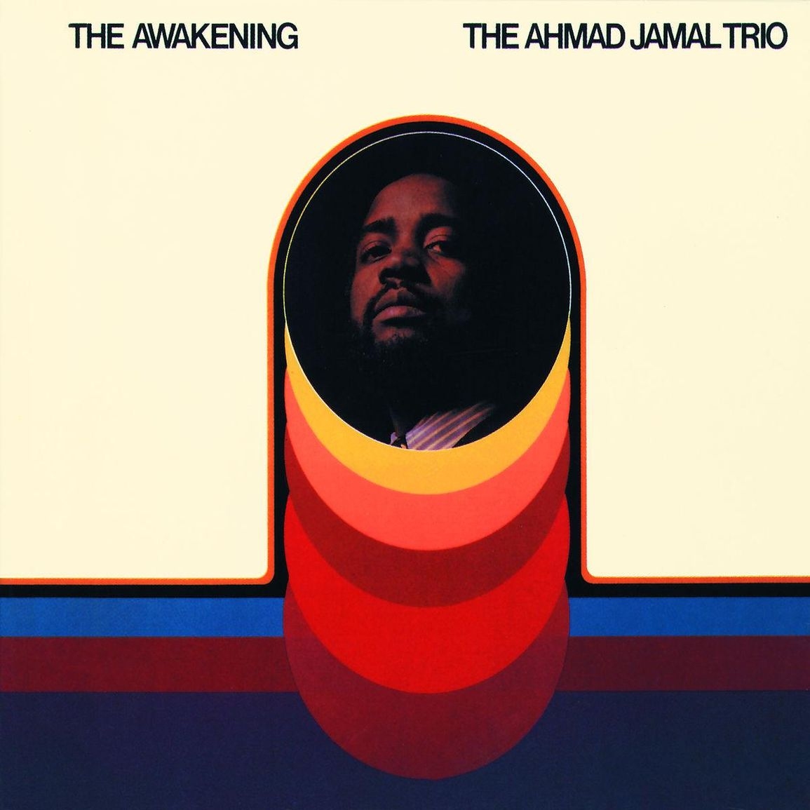

The Awakening
Au début, j’ai eu l’impression qu’il existait un thème principal autour duquel le trio ne cessait de tourner. Il l’assombrit, le ralentit, le rend plus doux ou plus nerveux, mais quelque chose revient toujours. Ça m’a fait penser, toutes proportions gardées, à cette idée de motif obsessionnel que j’aime dans Promises de Floating Points, Pharoah Sanders et le London Symphony Orchestra : un point fixe pendant que tout le reste bouge.
Puis I Love Music arrive et le piano devient presque sidérant. L’introduction est d’une virtuosité impressionnante, extrêmement mobile, précise, dense. Par moments, ça flirte presque avec une sensation de free jazz : le cadre semble pouvoir se désagréger, sans jamais réellement se perdre.
C’est là que le disque devient le plus intense pour moi. On traverse beaucoup d’émotions en très peu de temps, sans avoir le temps de se stabiliser. Quelque chose peut sembler calme, puis tendu, puis presque agressif, avant de redevenir doux. Cette instabilité est parfois franchement dérangeante.
Le moment le plus lunaire arrive quand l’accompagnement se pose tandis que le piano, lui, continue sa frénésie. Deux états incompatibles existent en même temps. Une partie du morceau semble dire “tout va bien”, tandis qu’une autre refuse absolument de se calmer.
Même quand un élément apporte de l’apaisement, un autre maintient la tension.
Sur Patterns, j’ai retrouvé cette impression de bande originale que j’avais déjà ressentie sur d’autres disques de cette odyssée. Le mix m’a particulièrement frappé : la contrebasse clairement à gauche, la ride à droite, et beaucoup d’espace entre les instruments. On a presque l’impression que le trio est placé physiquement devant soi.
J’ai aussi noté quelque chose dans leur manière de jouer : les instruments sont tendus, soutenus, francs. La contrebasse pince vraiment, la batterie découpe, le piano affirme ses notes. Même lorsque le volume baisse, le geste reste ferme. Ça maintient une tension constante.
Wave, composition d’Antônio Carlos Jobim, est intéressante pour une autre raison : entendre ce matériau associé à la bossa nova et au jazz brésilien passer dans le langage du trio. La mélodie reste reconnaissable, mais elle change de registre, devient plus tendue, plus pianistique, presque plus anguleuse.
Et pourtant, malgré toutes ces choses que j’ai aimées, je garde une distance. Le formalisme du jazz classique est très présent. Thèmes, variations, logique du trio, improvisation : je sens la force, la technique, l’écoute entre les musiciens, mais ce langage ne me percute pas toujours complètement.
Je termine donc avec une sensation assez nette : c’est un disque que je trouve fort avant d’être un disque qui me bouleverse. Le trio est excellent, parfois impressionnant au point de devenir presque physique. Mais je reste surtout accroché aux moments où son classicisme se fissure, où la virtuosité devient instable, étrange ou dangereuse.